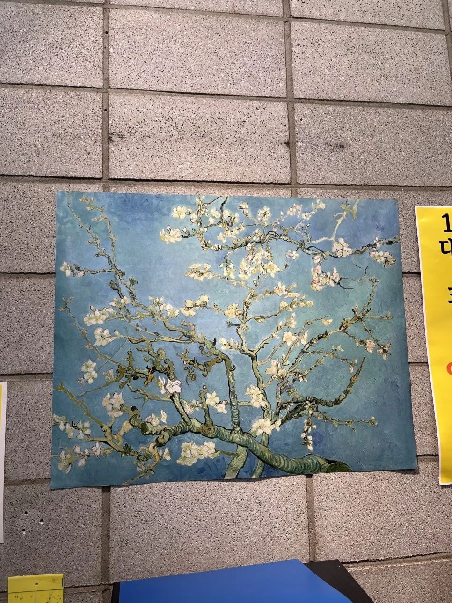
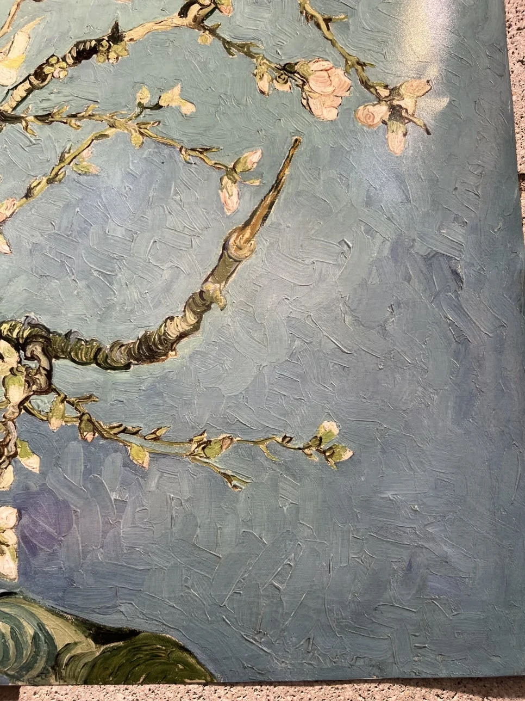
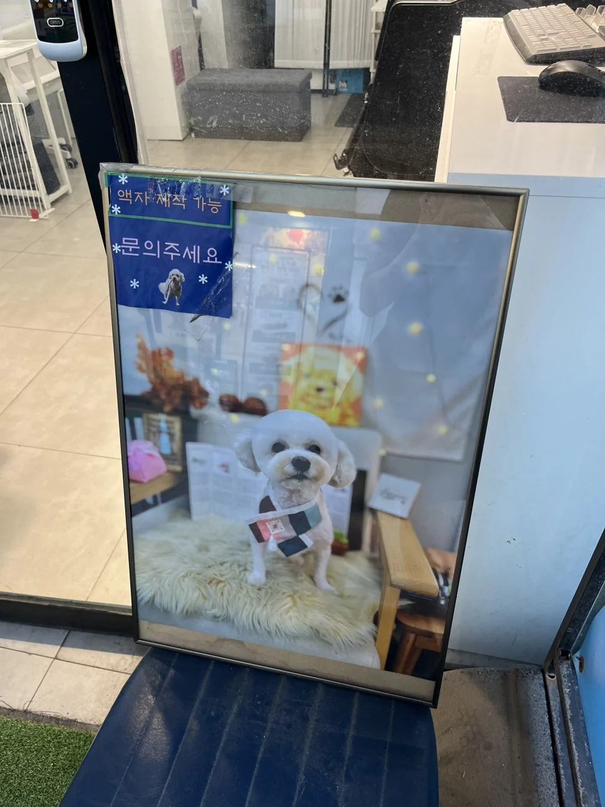

부모님 환갑에 찍은 가족사진이나 매일 보고 싶은 반려동물 사진이 휴대폰에만 있다면, 벽에 걸 액자 크기에 맞춰 한 장 뽑아 보세요. 어떤 느낌일지 가늠하시도록 왕십리점에서 캐논 PRO-521 플로터로 직접 출력해 걸어 둔 작품을 보여드릴게요.
클림트의 「키스」를 60 × 60cm로
위 사진은 매장 벽에 붙여 놓은 클림트의 「키스」입니다. 정사각형으로 크게 인쇄하니 인물의 옷에 들어간 작은 무늬와 금빛 배경을 가까이에서 볼 수 있어요.
반 고흐의 「꽃피는 아몬드 나무」를 60 × 90cm로
두 번째 작품은 가로로 긴 벽면에 맞춰 출력했어요. 전체 사진과 인쇄면을 가까이서 찍은 사진을 함께 보면, 실제 크기에서 꽃잎과 붓자국이 어떻게 보이는지 비교할 수 있습니다.


가족사진과 반려동물 사진도 액자 크기에 맞게
매장에는 반려견 사진도 출력해 두었어요. 돌사진이나 가족사진을 준비하실 때는 휴대폰에 저장된 고해상도 원본을 보내 주세요. 넣으려는 액자의 안쪽 치수를 함께 알려 주시면, 인물이 잘리지 않도록 사진 비율과 출력 크기를 확인해 드립니다.

A1 포스터나 주말에 찾으실 사진은 파일과 수령 희망 시간을 미리 알려 주세요. 용지와 수량을 확인한 뒤 당일 픽업 가능 시간을 안내해 드립니다.